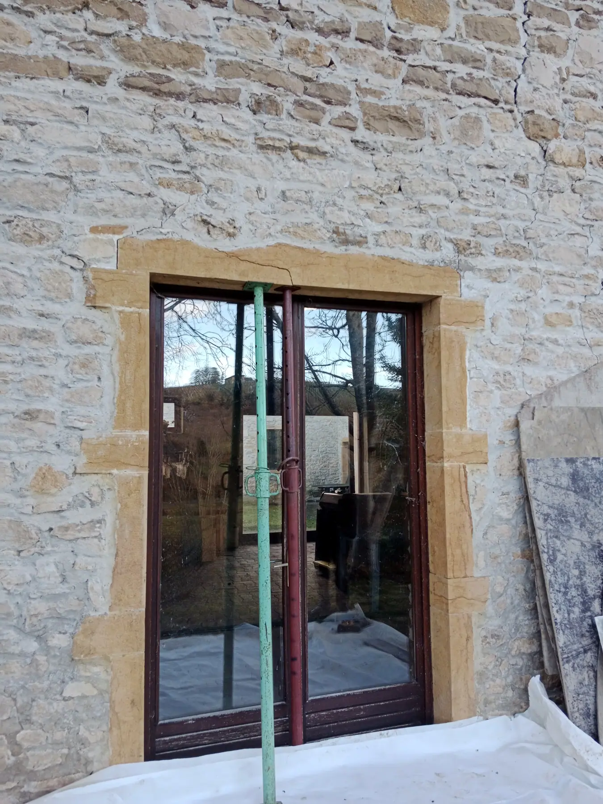
Accueil / Maçonnerie
Maçonnerieet patrimoine.
Du garage neuf à la façade en pisé, de la reprise de fondations à la taille de pierre. L'entreprise maîtrise les matériaux d'aujourd'hui et ceux d'hier.
Construire, agrandir, consolider.
Garage, agrandissement clé en main, création d'ouvertures, terrassement à la pelle mécanique : l'entreprise prend en charge le gros œuvre de bout en bout, et peut réaliser votre permis de construire.
- Construction de garages
- Agrandissements clé en main
- Réalisation d'ouvertures
- Reprise en sous-œuvre
- Terrassement pelle mécanique
- Reprise de fondations
- Réfection de salle de bain
- Aménagement extérieur
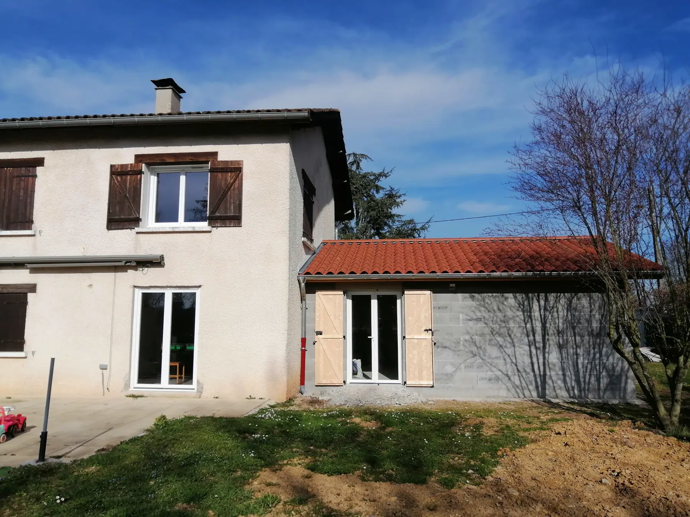
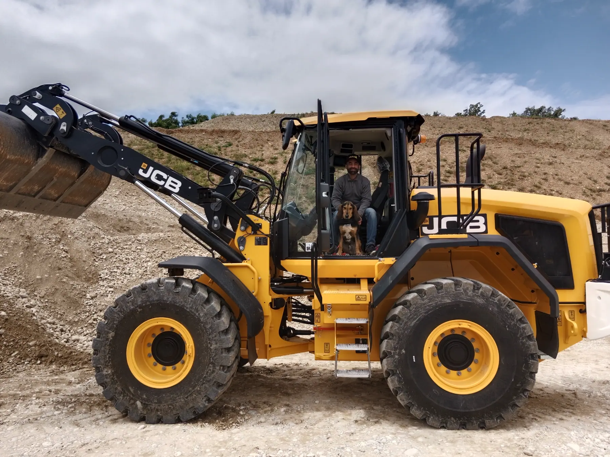
Bâtiment fissuré ou sinistré.
Mur qui se fissure, fondations qui bougent : l'entreprise intervient vite, contacte votre assurance et monte le dossier avec vous.
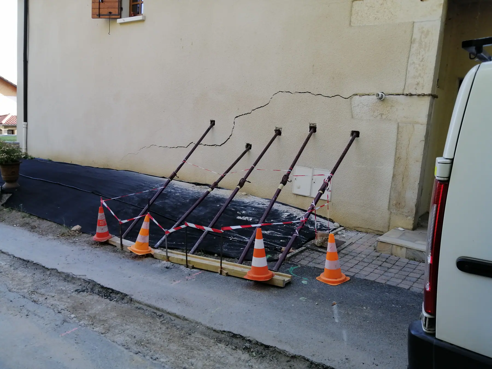
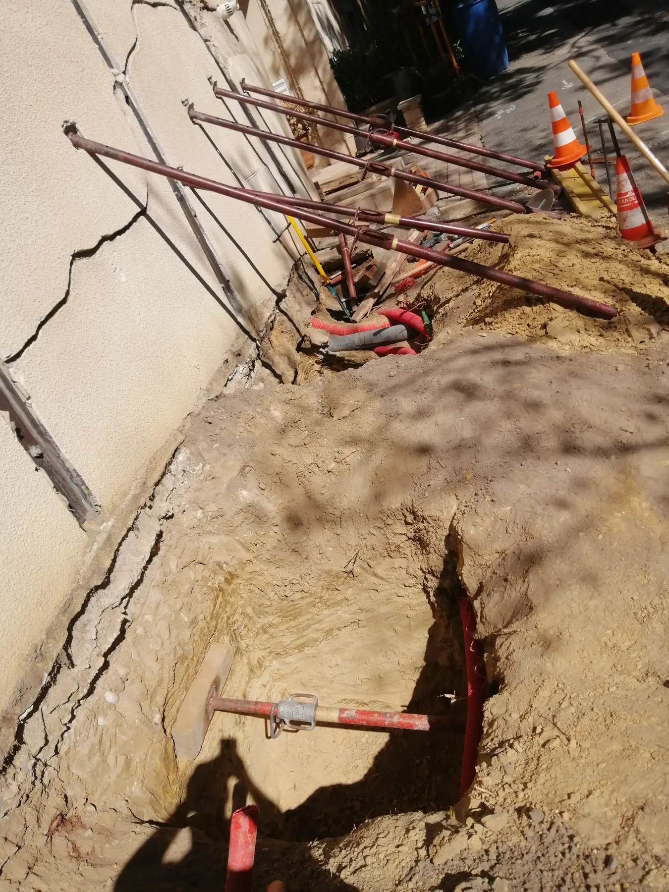
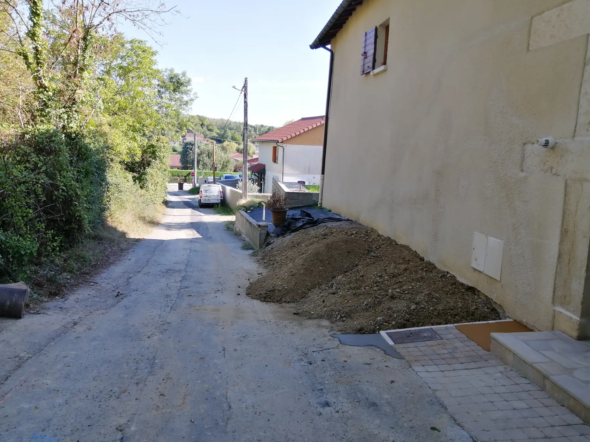
Pisé, chaux, pierre : le patrimoine.
Artisan d'Art depuis 2017, l'entreprise restaure le bâti ancien avec ses matériaux d'origine : façades en pisé, terre crue ou cuite, chaux, pierre taillée et posée.
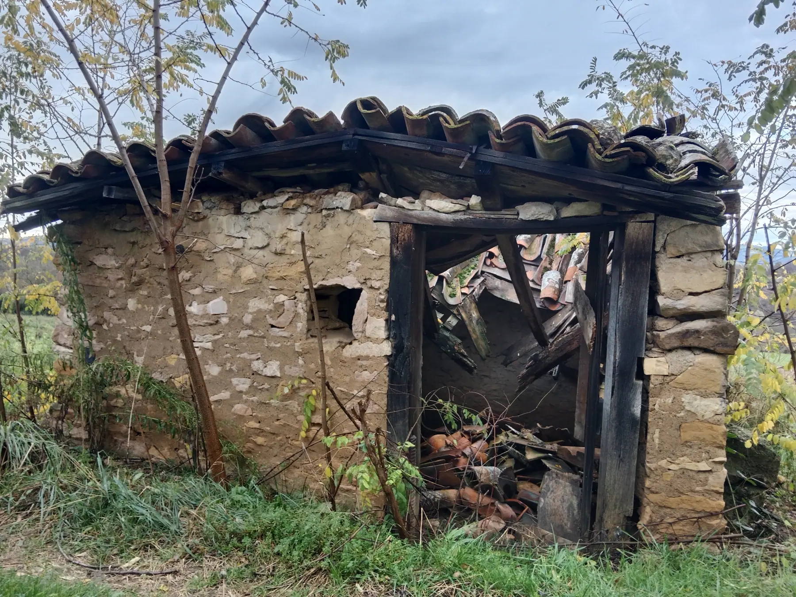
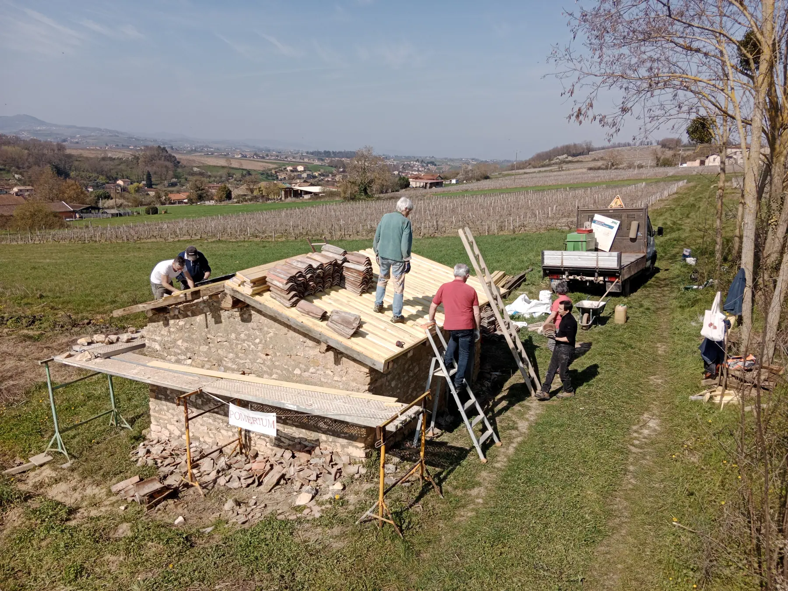
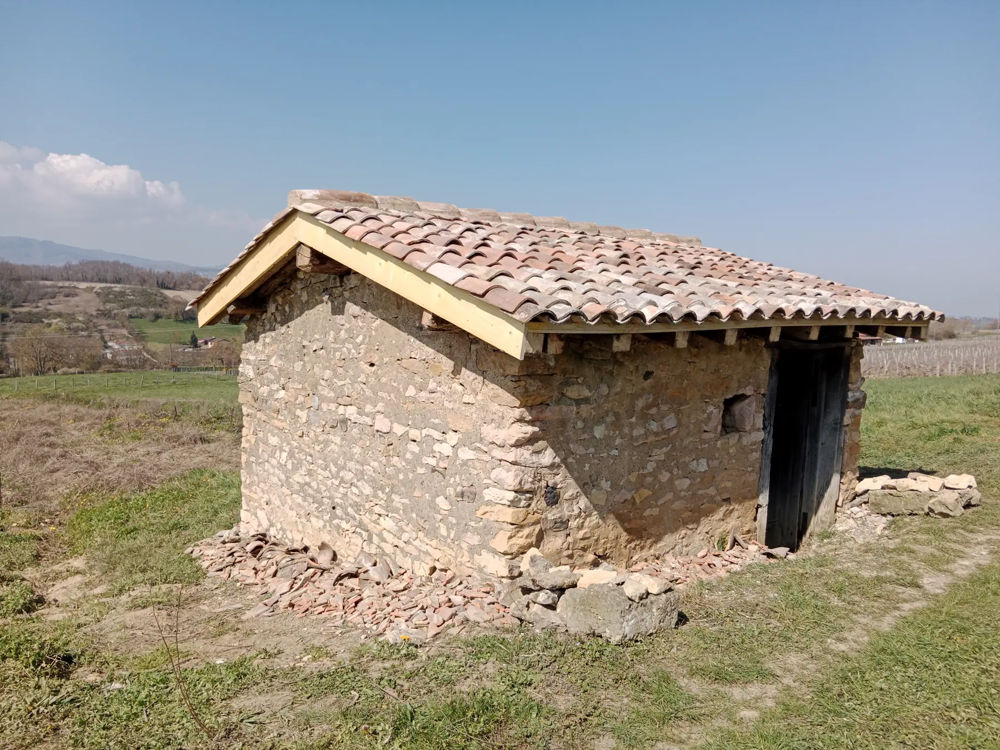
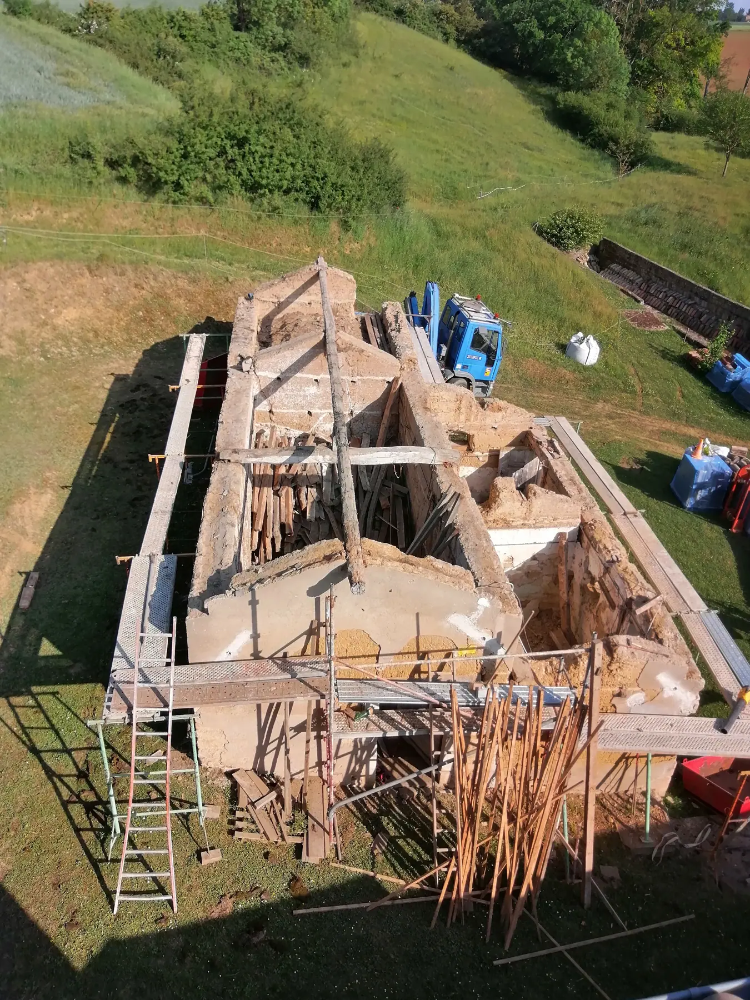
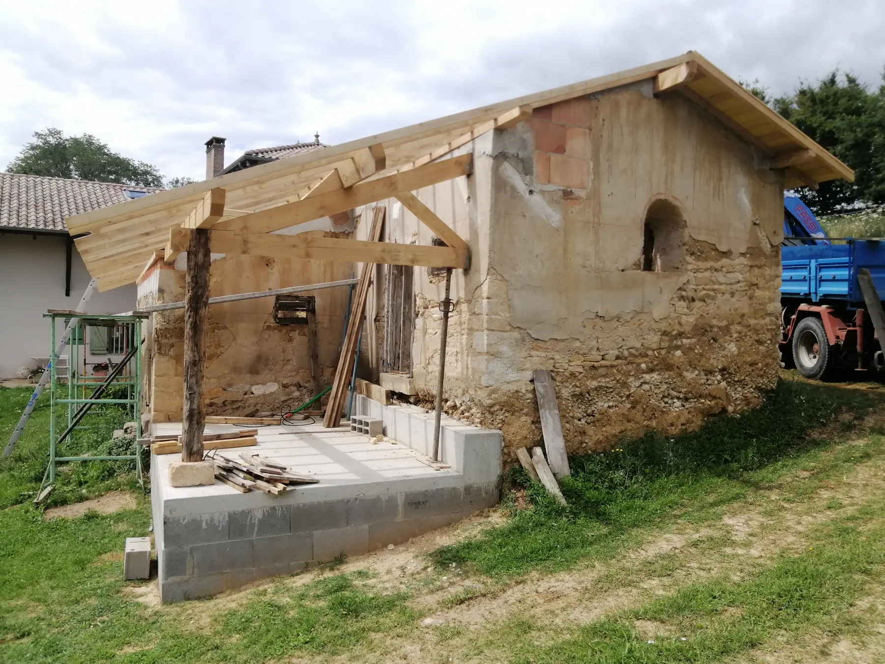
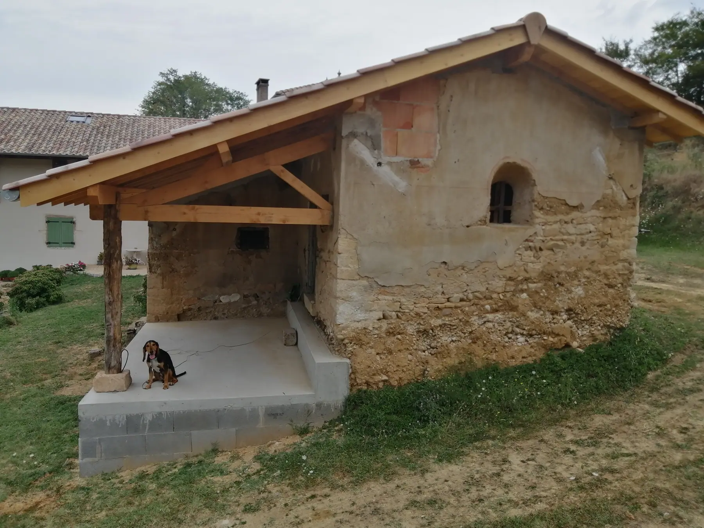
- Façade sur pisé
- Travail de la chaux et de la terre crue ou cuite
- Restauration de patrimoine
- Taille et pose de pierre
- Murs en pierre sèche
- Pavés et béton désactivé
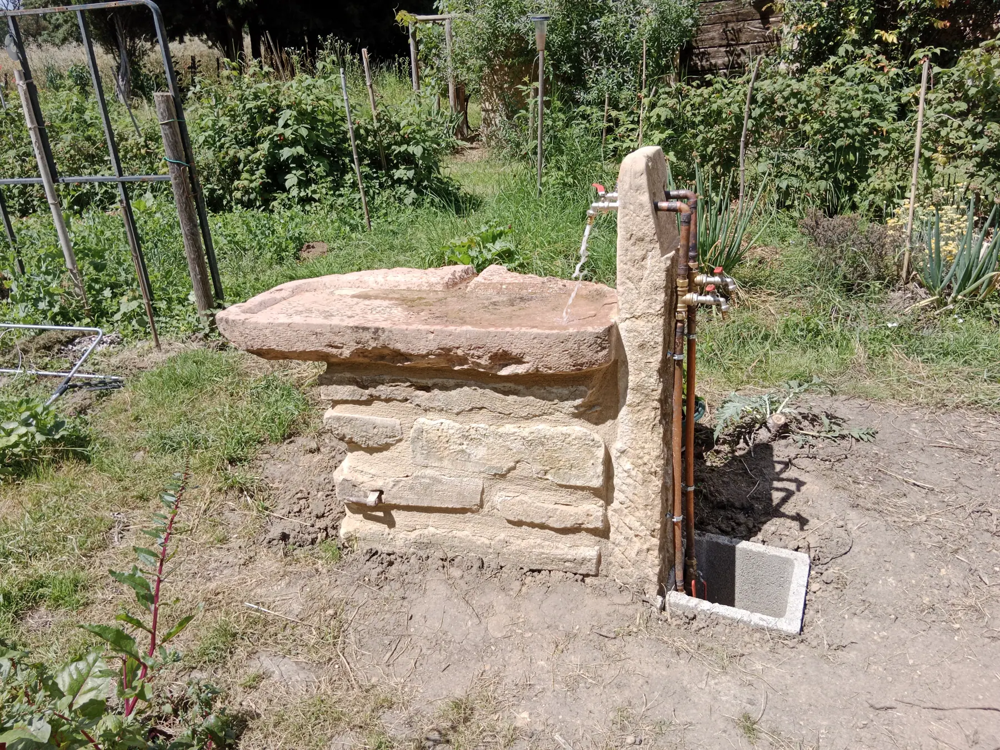
Accessibilité Handibat.
Entreprise labellisée Handibat, Pierre Nuguet adapte les logements et les bâtiments publics : rampes d'accès, modification d'ouvertures, salles de bain adaptées, pour permettre le maintien à domicile.
- Réalisation de rampes
- Modification d'ouvertures
- Salles de bain adaptées
- Accès aux bâtiments communaux
Un projet ? Parlons-en sur place.
Devis rapide et détaillé, pour les particuliers comme pour les collectivités, les assurances et les régies.